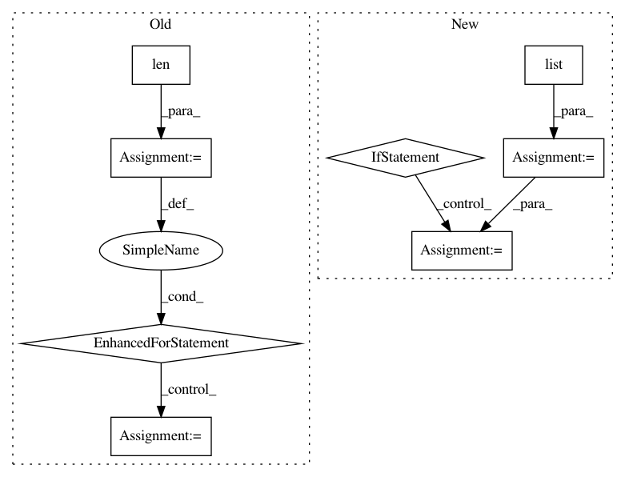

2c5d24194dbe627dd78dbeabbe6811f3e274181a,generator.py,,data_generator,#,45
Before Change
def data_generator(data_file, index_list, batch_size=1, binary=True):
nb_subjects = len(index_list)
while True:
shuffle(index_list)
nb_batches = nb_subjects/batch_size
// TODO: Edge case? Currently this is handled by flooring the number of training/testing samples
for i in range(nb_batches):
x = data_file.root.data[i*batch_size:(i+1)*batch_size]
y = data_file.root.truth[i*batch_size:(i+1)*batch_size]
if binary:
y[y > 0] = 1
else:
raise NotImplementedError("Multi-class labels are not yet implemented")
yield x, y
After Change
while True:
shuffle(index_list)
x_list = list()
y_list = list()
// TODO: Edge case? Currently this is handled by flooring the number of training/testing samples
for index in index_list:
x_list.append(data_file.root.data[index])
y_list.append(data_file.root.truth[index])
if len(x_list) == batch_size:
x = np.asarray(x_list)
y = np.asarray(y_list)
x_list = list()
y_list = list()
if binary:
y[y > 0] = 1
else:
raise NotImplementedError("Multi-class labels are not yet implemented")
yield x, y
In pattern: SUPERPATTERN
Frequency: 3
Non-data size: 8
Instances
Project Name: ellisdg/3DUnetCNN
Commit Name: 2c5d24194dbe627dd78dbeabbe6811f3e274181a
Time: 2017-04-07
Author: david.ellis@unmc.edu
File Name: generator.py
Class Name:
Method Name: data_generator
Project Name: mittagessen/kraken
Commit Name: 6e6c12425a787d8c954ce5c31ceed59cdd531001
Time: 2018-05-20
Author: mittagessen@l.unchti.me
File Name: kraken/lib/ctc_decoder.py
Class Name:
Method Name: greedy_decoder
Project Name: dit/dit
Commit Name: 608fff2119f21191352ddf5d96eb82fc1ab099b0
Time: 2013-02-25
Author: chebee7i@gmail.com
File Name: dit/utils/misc.py
Class Name:
Method Name: partitions